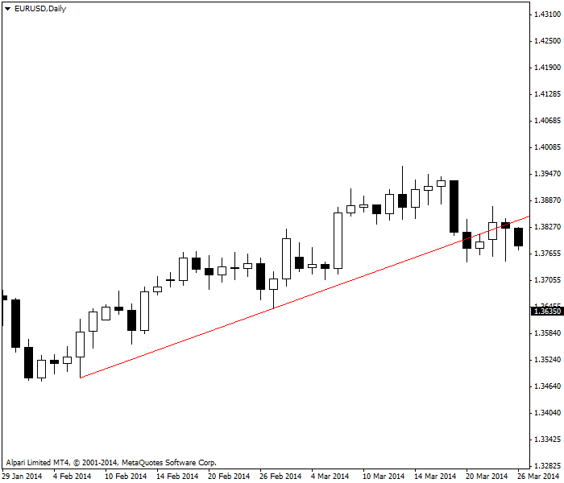
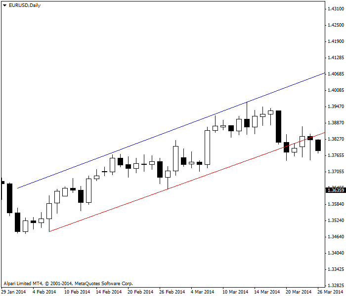
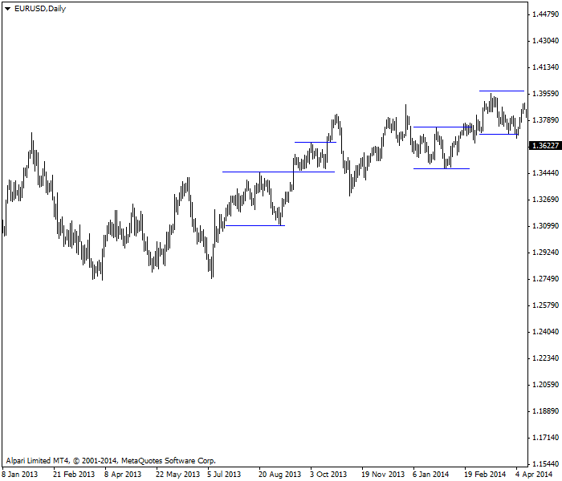

<!DOCTYPE html>
<html>
</html>
<head>
  <meta charset="utf-8">
  <meta http-equiv="X-UA-Compatible" content="IE=edge">
  <title>外汇站（fx-z.com） - 支撑位与阻力位</title>
  <meta name="description" content="">
  <meta name="viewport" content="width=device-width, initial-scale=1">
  <meta name="robots" content="all,follow">
  <!-- Bootstrap CSS-->
  <link rel="stylesheet" href="vendor/bootstrap/css/bootstrap.min.css">
  <!-- Font Awesome CSS-->
  <link rel="stylesheet" href="vendor/font-awesome/css/font-awesome.min.css">
  <!-- Google fonts - Roboto-->
  <link rel="stylesheet" href="https://fonts.googleapis.com/css?family=Roboto:400,300,700,400italic">
  <!-- owl carousel-->
  <link rel="stylesheet" href="vendor/owl.carousel/assets/owl.carousel.css">
  <link rel="stylesheet" href="vendor/owl.carousel/assets/owl.theme.default.css">
  <!-- theme stylesheet-->
  <link rel="stylesheet" href="css/style.default.css" id="theme-stylesheet">
  <!-- Custom stylesheet - for your changes-->
  <link rel="stylesheet" href="css/custom.css">
  <!-- Favicon-->
  <link rel="shortcut icon" href="img/favicon.png">
  <!-- Tweaks for older IEs--><!--[if lt IE 9]>
    <script src="https://oss.maxcdn.com/html5shiv/3.7.3/html5shiv.min.js"></script>
    <script src="https://oss.maxcdn.com/respond/1.4.2/respond.min.js"></script><![endif]-->
</head>
<body>
  <div id="all">
    <div class="container-fluid">
      <div class="row row-offcanvas row-offcanvas-left"> 
        <!--   *** SIDEBAR ***-->
        <div id="sidebar" class="col-md-4 col-lg-3 sidebar-offcanvas">
          <div class="sidebar-content">
            <h1 class="sidebar-heading"> <a href="https://fx-z.com">fx-z.com</a></h1>
            <p class="sidebar-p">介绍外汇相关的基本知识，告诉您如何进行自己的技术面和基本面分析，讲解先进的交易理念，并且为您阐述失败交易者与专业交易者之间的真正区别。 </p>
            <p class="sidebar-p">通过这些课程的学习，您将学会如何根据自己的优势来应用情绪分析，还将了解真实世界的事件会对货币汇率产生什么影响，央行在外汇市场中所发挥的作用，以及交易者在颇受欢迎的即期外汇交易中有哪些选择方案。 </p>
            <ul class="sidebar-menu">
                <!-- Link-->
                <li class="sidebar-item"><a href="https://fx-z.com" class="sidebar-link">首页</a></li>
                <!-- Link-->
                <li class="sidebar-item"><a href="cihui.html" class="sidebar-link">外汇词汇</a></li>
                <!-- Link-->
                <li class="sidebar-item"><a href="ebook.html" class="sidebar-link">获取外汇电子书</a></li>
            </ul>
            <p class="social"><a href="https://www.forextimechina.com.cn/zh?form=IZIN" target="_blank"data-animate-hover="pulse" class="external facebook"><i class="fa fa-eur"></i></a><a href="https://www.forextimechina.com.cn/zh?form=IZIN" target="_blank" data-animate-hover="pulse" class="external gplus"><i class="fa fa-gbp"></i></a><a href="https://www.forextimechina.com.cn/zh?form=IZIN" target="_blank" data-animate-hover="pulse" class="external twitter"><i class="fa fa-rmb"></i></a><a href="https://www.forextimechina.com.cn/zh?form=IZIN" target="_blank" title="" class="external instagram"><i class="fa fa-dollar"></i></a><a href="https://www.forextimechina.com.cn/zh?form=IZIN" target="_blank" data-animate-hover="pulse" class="email"><i class="fa fa-money"></i></a></p>
            <div class="copyright text-center text-md-left">
             
              
            </div>
          </div>
        </div>
        <!--   *** SIDEBAR END ***  -->
        <!--   *** DETAIL ***-->
        <div class="col-md-8 col-lg-9 content-column white-background">
          <div class="small-navbar d-flex d-md-none">
            <button type="button" data-toggle="offcanvas" class="btn btn-outline-primary"> <i class="fa fa-align-left mr-2"></i>菜单</button>
            <h1 class="small-navbar-heading"> <a href="https://fx-z.com/5-2.html">下一篇 </a></h1>
          </div>
          <div class="row">
            <div class="col-xl-10">
              <div class="content-column-content">
                <h1>支撑位与阻力位</h1>
       <p>
    当您首次进行技术分析时，您发现交易者会为价格跌势设置无形的支撑位，为进一步的涨势设置无形的障碍，这似乎是荒唐的，但这正是支撑位和阻力位发挥作用之时。支撑位和阻力位不仅是外汇交易，还是所有交易中的核心理念，且已经有十多年的历史。
</p>
<p>
    支撑位是当前价格之下的一片区域；我们认为交易者不应该以支撑位之下的价格交易。它是一条从价格序列中的相对低点连接另一个相对低点的手绘线，而且这条线将向前延续。在下图实例中，连接低点的红线即一条支撑线。我们认为，当支撑线被下行突破时，这对于所有交易者都颇为重要，而且意味着当前走势已经耗尽。
</p>
<p>
     支撑线被突破
</p>
<p>
    随着价格靠近支撑线，我们预计支撑线将坚守阵地，并且提供一个优秀的入场位。
</p>
<p>
    当价格突破支撑线后，我们预计价格将连续创下新的最低价和更低的收盘价。此时，我们可能想做空。
</p>
<p>
    趋势可能反复，但现有支撑线已经放松，新的支撑线已经创建。这正是当“突破”为虚假信号时的表现示例之一。
</p>
<p>
    阻力位是当前价格之上的一片区域；我们认为交易者不应该以阻力位之上的价格交易。它是一条从价格序列中的相对高点连接另一个相对高点的线，而且这条线将手动向前延续。在下图示例中，我们原本可以用蓝线手动连接高点，但实际上，我们采用软件中的“平行线”，而且那条平行线符合要求。真实情况并非总是如此。您的支撑线可能向上倾斜，而阻力线向下倾斜，从而形成一个三角形。您可以在图表形态课程章节阅读更多内容。
</p>
<p>
     阻力线被添加至相同图表上
</p>
<p>
    T阻力线对货币价格可能上行的高度设置了限制。当您计划设置一个获利了结的价格目标时，阻力线将是一项有用的数据。如果将获利了结的目标位定得比阻力线高，这是不现实的。如果您在阻力线或低于阻力线的价位所获得的盈利无法满足您的需求，则您不应进入这次交易。
</p>
<p>
    有时，阻力线确实被向上突破，而价格依然持续上行。请勿抱怨，您只需欣然地接受这次突破所带来的收益。但是请注意，突破阻力可能成为一种短期动向。您需要查看价格曲线并结合其他指标，以判断走势将于何处枯竭。
</p>
<p>
    当您绘制支撑线时，您经常奇迹般地发现一条连接高点的平行阻力线。无人知道为何这些线会平行，除了一个原因：交易池的集体心理与预期价格成比例地保持一致。
</p>
<p>
    <strong>支撑位与阻力位为何有用？</strong>
</p>
<p>
    一个简单的答案是，交易者可以记住近期买入和卖出的价位，那么在一次明确的涨势中，如果在 x 买入较好，则在 x+2 买入也较好。您可以将供求原则应用于支撑位和阻力位：交易者都记得价格于近期上涨至相似的价位，从而共同构成了需求。同样，他们记得上一期价格上涨至高于平均价 z% 的高点，然后价格停止涨势，因此他们集体卖出头寸，从而构成了供应。这种看法并没错，但却是愚蠢的。支撑位与阻力位能发挥作用是因为交易者记得重要的价位并绘制了线条。
</p>
<p>
    话虽如此，该线条是人工设定并添加于图表上的，因此并非所有人都会遵守它。更精确的说法是“支撑区与阻力区”，而不是单个绝对的数据价格。
</p>
<p>
    <strong>水平支撑位与阻力位</strong>
</p>
<p>
    您也可以用相对低点连成的水平线来绘制支撑线，也可以用相对高点连成的水平线来绘制阻力线。如上图所示，并非所有价格序列都整齐有序，因而无法以上述方式连接起来——请查看图表中间部分的上涨趋势。您的水平支撑线或阻力线并不明确。
</p>
<p>
     图表上有多条水平支撑线与阻力线
</p>
<p>
    这种观察应该激起了您的灵感火花——如支撑线示例图所示，价格有时向单一方向呈现明显的趋势。此时适合绘制一条连接低点且斜率可测的对角斜线。不过，当价格序列在相对较窄的范围内进行区间盘整交易时，较为有效的是水平支撑线或阻力线。因此，您会希望在趋势市场中采用斜线，在区间盘整市场中采用水平线。由于您经常无法判断自己处于哪种市场，您需要同时绘制两种线条并确认哪种有效。
</p>
<p>
    外汇价格并非总是处于趋势状态。趋势时段可能被区间盘整价格走向打断。
</p>
<p>
    <strong>专业建议：当您的交易周期较短时，例如 15 分钟或 1 小时曲线，则水平支撑线和阻力线将极为有用。</strong>
</p>
<p>
    <br/>
</p>
<p>
    <br/>
</p>
              </div>
            </div>
          </div>
        </div>
      </div>
    </div>
  </div>
  <!-- JavaScript files-->
  <script src="vendor/jquery/jquery.min.js"></script>
  <script src="vendor/popper.js/umd/popper.min.js"> </script>
  <script src="vendor/bootstrap/js/bootstrap.min.js"></script>
  <script src="vendor/jquery.cookie/jquery.cookie.js"> </script>
  <script src="vendor/owl.carousel/owl.carousel.min.js"></script>
  <script src="vendor/masonry-layout/masonry.pkgd.min.js"></script>
  <script src="js/front.js"></script>
</body>